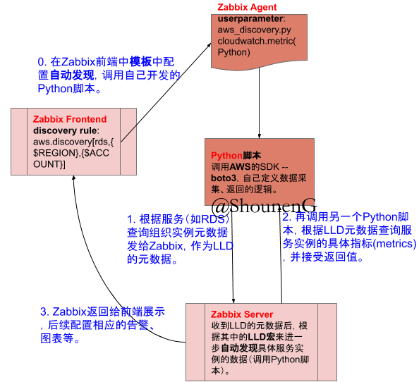
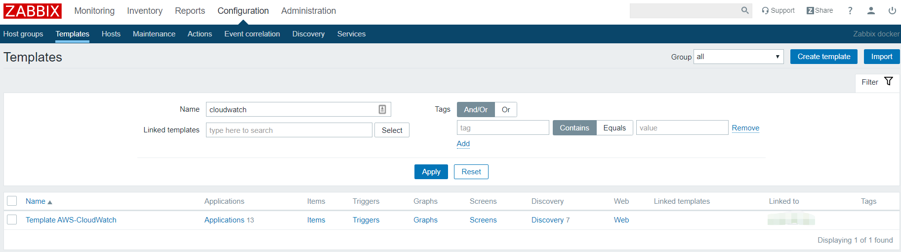
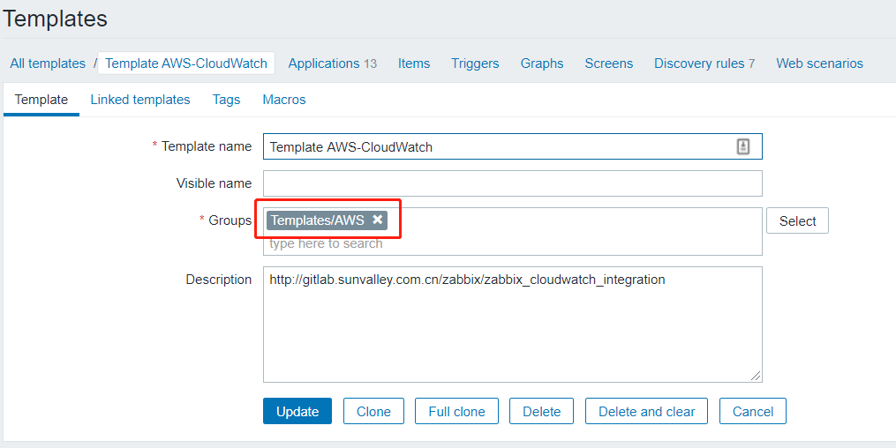
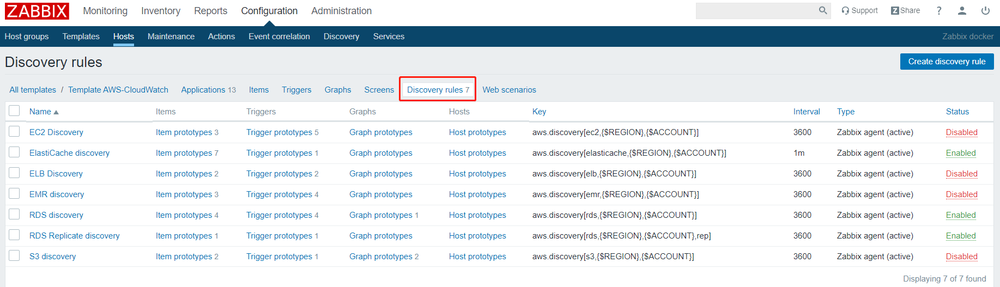
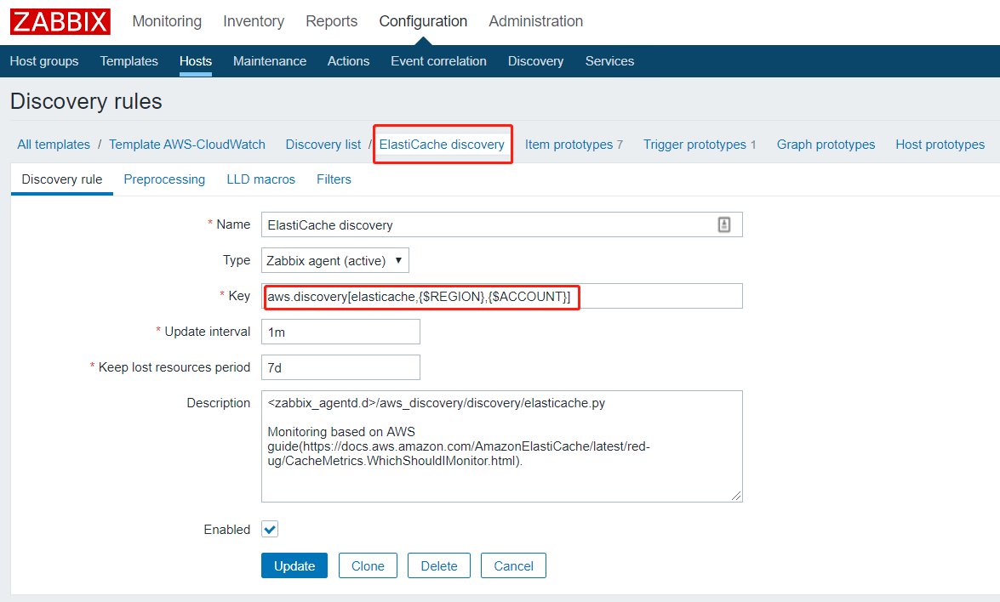
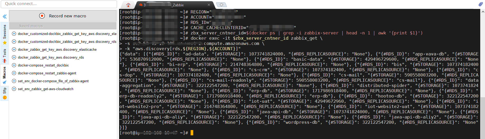
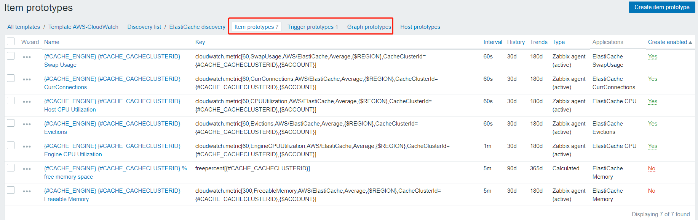
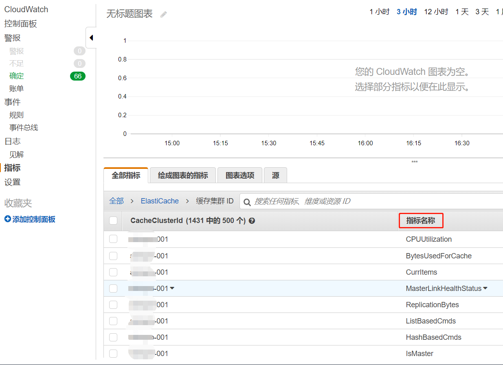
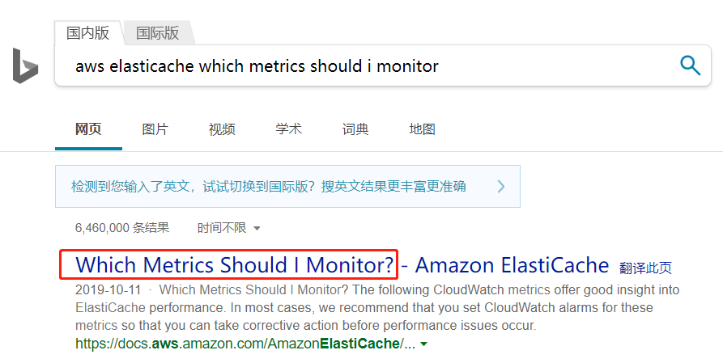

前言
之前介绍过，在Zabbix中添加监控的一些经验法则。也就是总是围绕模板(Templates)、主机组(Host groups)来思考，接下来的内容记录了我如何添加一个实际的自定义监控项。
这篇开发指南项使用开源项目的Python脚本，目的是为了在Zabbix中自动发现AWS中的服务实例。
逻辑关系图
先上个逻辑图：

这个逻辑图并不是完整的逻辑关系，比如Zabbix Frontend不是直接去调用Zabbix Agent，而是Zabbix Server去调用。
而Zabbix Server获取Agent的数据又分为主动和被动2种类型，对应着Server方不同的子进程。
这个逻辑图展示的是在用户操作需要设计的组件之间大致的一个关系。
关键词
自动发现(LLD)：
LLD – Low Level Discovery
Zabbix中的“发现”(Discovery)主要为了实现2大类目的：- 发现被监控的对象以及自动注册。这种功能可以让我们免去每次新增监控对象就要手动配置的烦恼。
- 发现不同实体并自动创建监控项、触发器和图形等。以上图为例，自动发现的实体就是通过Python脚本调用AWS API获取到的服务(RDS, ElastiCache等)的实例,并根据规则创建出来的这些实例的监控项、触发器等。
userparameter:
Zabbix中实现自定义监控程序的常用方法有2种：开发自定义的可加载模块（.so文件），这个跟Linux中的模块文件是一个道理，通常用C语言来开发，当然，用这种方式来扩展Zabbix的功能可以获得最佳性能，然而我不会C语言……
调用OS的fork()创建子进程，这里面常用的方式就是userparameter。其他的external check、调用Agent的system.run[]监控项不实用脚注1。不予考虑。
目前我还没有验证过，但我猜测可以通过以下方式实现LLD的负载均衡：
- 创建一个load balance，比如在2个Linux主机上通过Nginx+keepalived实现。LB的ip为192.168.1.100。
- 在Zabbix上配置Host，ip为LB的ip – 192.168.1.100，取名为LLD LB host。
- 将这个LLD LB Host与LLD的template相关联。已达到负载均衡的目的。
显然，如果要这么做的话，只有采用userparameter来配置自定义监控脚本时最方便开发，维护的。
LLD宏：
Zabbix的宏功能对于开发自定义监控项来说必不可少，非常方便。比如，用自定义脚本，按照Zabbix规定的json格式返回回来，就可以在别监控项或者触发器中使用！LLD宏就是自动发现后注册的变量，和其他“Agent内置宏”、“用户自定义宏”等区分。详情官方文档。
userparameter自定义脚本的说明
使用userparameter，只需要在Zabbix Agent的配置文件中定义userparameter指令即可。
一般在使用上，会在主配置文件中使用include指令来指定额外加载的配置文件。
配置文件命名风格
以下是我的配置文件命名风格：
- 住配置文件中只包含基本配置，额外的参数都放在文件中，命名为：
extra_zabbix-agent_parameters.conf。 - userparameter以项目为单位，例如这次开发的是整合AWS相关的功能，命名为：
userparameter_aws-discovery-cloudwatch.conf。
userparameter相关配置
extra_zabbix-agent_parameters.conf
由于Zabbix Agent调用Python脚本访问AWS API，返回数据有可能会超过默认的timeout配置的时常（5秒），所以我修改了Timeout属性：Timeout=30。userparameter_aws-discovery-cloudwatch.conf
UserParameter=aws.discovery[*],bash /etc/zabbix/zabbix_agentd.d/aws_discovery/aws_discovery.sh $1 $2 $3 $4 $5 $6 $7 $8 $9 UserParameter=cloudwatch.metric[*],bash /etc/zabbix/zabbix_agentd.d/aws_discovery/cloudwatch_metric.sh $1 $2 $3 $4 $5 $6 $7 $8 $9说明：
UserParameter=[ ], [parameter]
具体定义语法细节请参考官方文档。脚本简单逻辑说明：
- userparameter.conf文件中定义了自定义监控项的程序入口，这里使用的时shell脚本作为入口，只要时OS能执行的都行。shell脚本的参数在Zabbix Frontend（web控制台）上定义。
- shell脚本调用Python脚本，在Python脚本中组织参数，调用相应的服务相关的模块，再获取AWS服务实例的数据，组织成Zabbix规定的json格式，并打印。
- Zabbix Agent接受到打印的json格式字符串，作为这个userparameter监控项的返回值。
实际操作截图
- 创建监控模板

在开发一个新监控功能时，我们都要先考虑将它放在什么模板中。
这里，我创建了一个名为”Template AWS-CloudWatch”的模板。
 - 创建自动发现规则

自动发现规则中指定的监控项的key，就是刚才通过userparameter定义的key。

这里使用到了用户自定义宏：{$REGION},{$ACCOUNT}。用户自定义宏一般可以在模板中定义，或是主机中定义。 - 通过zabbix_get命令行工具测试userparameter是否正常工作
在正式配置下一步自动发现的“实际”项目之前，我们需要先确认刚才配置的userparameter是否能正常工作。
这是可以使用zabbix_get命令行工具。
 - 依次创建所需的监控项原型、触发器原型等

使用AWS API boto 3时的一些心得
- 直接查看boto 3的参考手册，看看对于某个服务（例如EC2、CloudWatch）有哪些增删改查的操作。
- 在AWS web控制台上查看某个服务有哪些指标：
 - 如果不知道该针对什么指标做监控，可以直接搜索”what metrics should I monitor”。AWS的文档真的很全！

其他注意事项
- 调用AWS API使用的IAM用户的权限需要控制适当。
- userparameter指向的脚本文件等的用户权限是否与Zabbix Agent进程的用户权限相符。
- 待补充……
项目代码和Zabbix Template内容，已经放在代码库中。
脚注
脚注1
- external check 是在Zabbix Server上执行的，虽然不需要Agent,但是我们不希望额外消耗Servere的性能。另外，这不利于实现“负载均衡”和“高可用”。
- Agent的监控项system.run[]就更加不用说了，谁会把复杂的逻辑写在这里面呢？如果是调用一个脚本，直接用userparameter更好。
↩